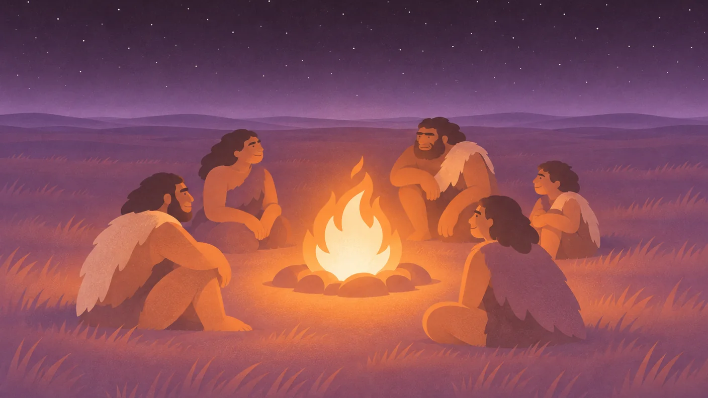
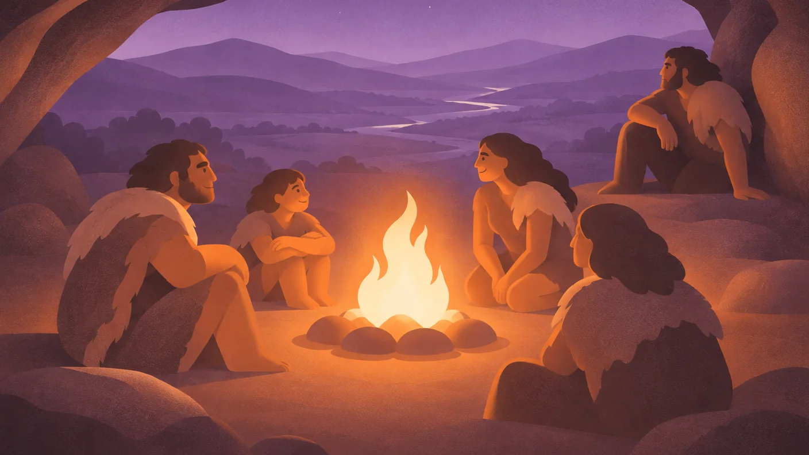
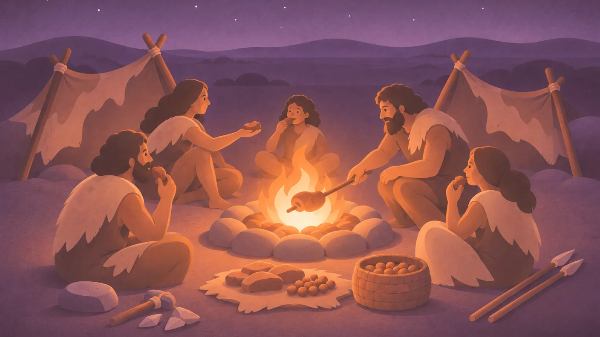
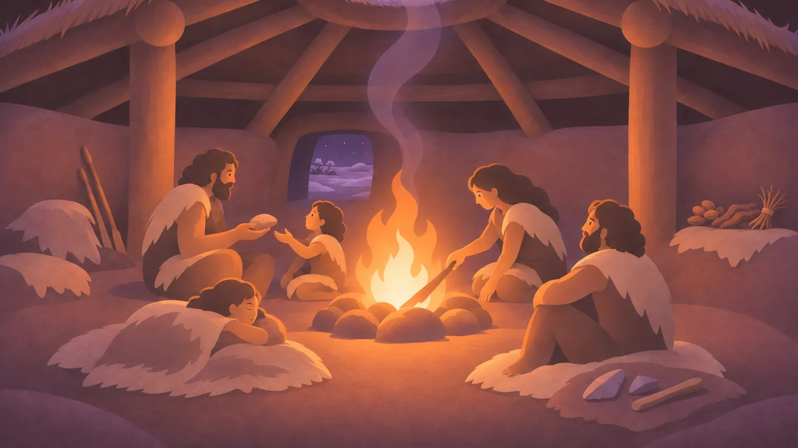
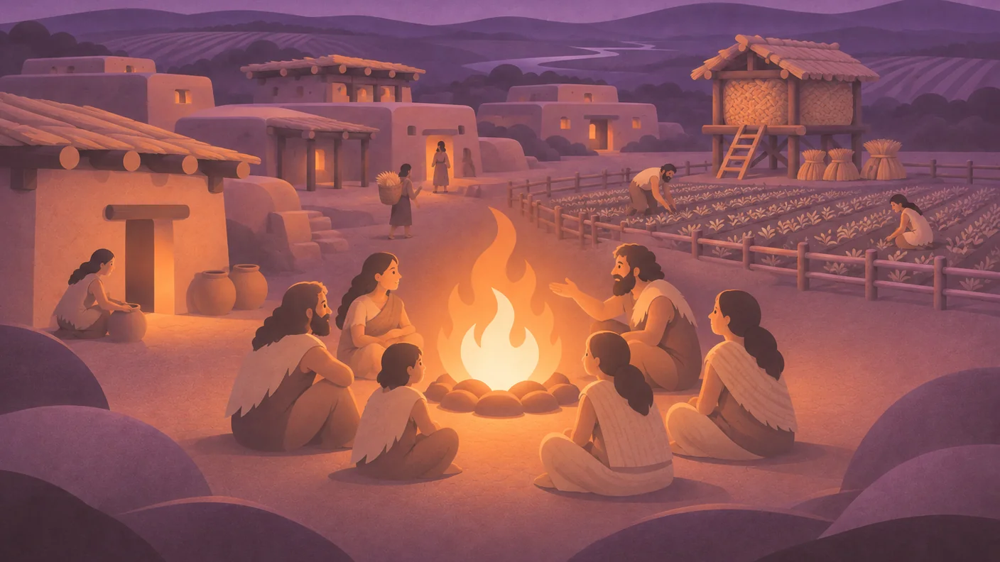
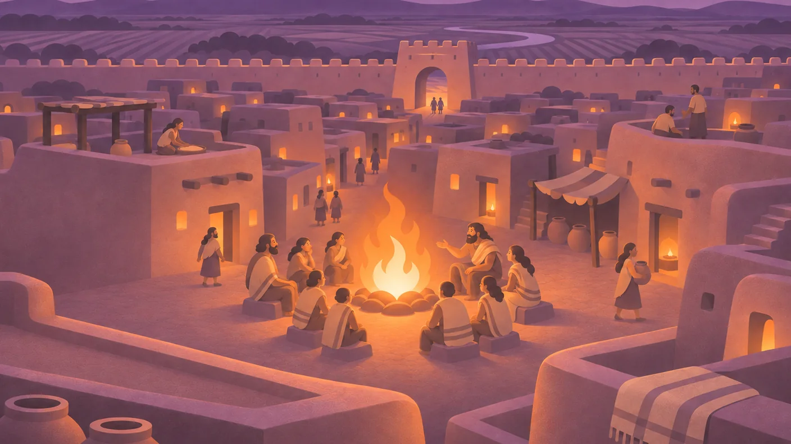
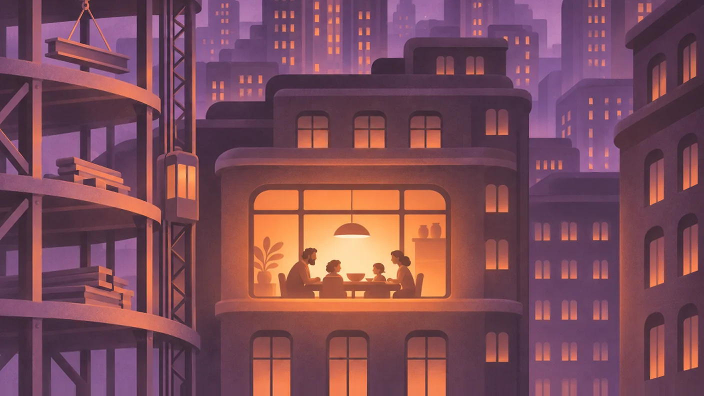
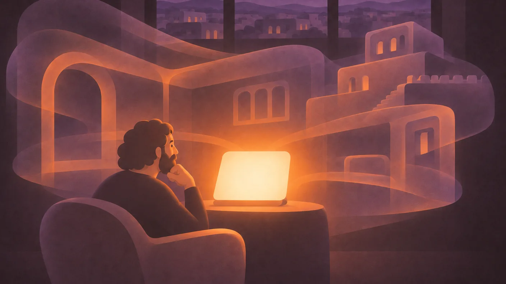
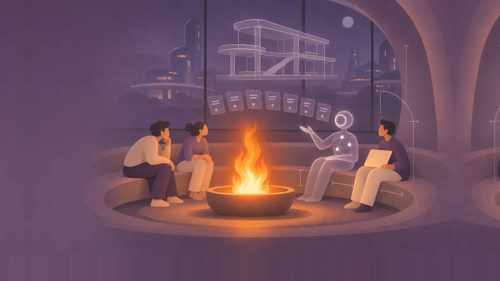

AEC 전문 지식
큐레이팅 시스템
AI 에이전트에 AEC 규범·실무 지식을 출처와 함께 제공하는 서버입니다.
조항과 수치마다 출처를 붙이고, 보유하지 않은 내용은 미보유로 표시합니다.
Claude와 ChatGPT에는 커넥터 주소 하나로 연결할 수 있습니다.
인류가 공간을 이해해 온 40,000년
AI 에이전트에 AEC 규범·실무 지식을 출처와 함께 제공하는 서버입니다.
조항과 수치마다 출처를 붙이고, 보유하지 않은 내용은 미보유로 표시합니다.
Claude와 ChatGPT에는 커넥터 주소 하나로 연결할 수 있습니다.









3만 년 전, 불가에 등을 대고 어둠을 살피던 사람과 오늘 카페에서 벽을 등진 자리부터 채우는 우리는 같은 본능으로 공간을 읽습니다.
그 본능이 동굴을, 화덕을, 정주를, 도시를 만들었습니다.
Den은 그 계보를 데이터로 복원합니다.
동굴에서 도시까지, 사람이 공간에서 얻은 기준은 법령과 설계기준, 시방서로 쌓였습니다. Den은 그 기준을 에이전트가 읽는 지식으로 정리해 출처와 함께 제공합니다.
설계, 엔지니어링, 시공, 유지관리 업무에 AI 에이전트를 쓰는 실무자와 건설 AX를 준비하는 회사가 대상입니다. 조항과 수치마다 붙은 출처로 근거를 확인할 수 있고, 보유하지 않은 내용은 미보유로 표시합니다.
지금 쓰는 AI 에이전트에 커넥터 주소를 등록해 사용합니다.